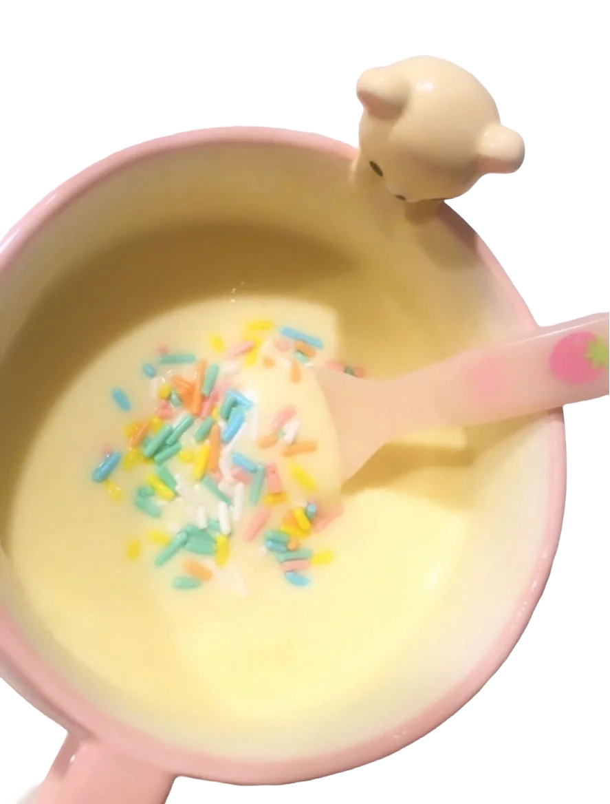
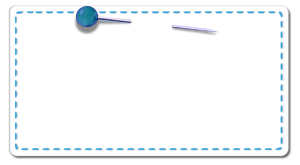
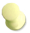
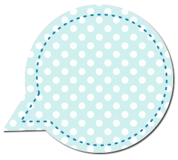
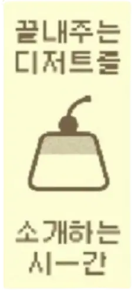

VISITOR ID
WARNING!
THE MUSIC PLAY/PAUSE BUTTON WORKS ONLY ON SCROLLING DOWN A BIT CAUSE OF THE NOBUE GIF
fancy seeing you here! im Tasha and i love
bon-bons , maxi-malism and
digital interactivity .

tired of the general web's insinc -erity @ the moment, i wanted my
own digital landpage for
all the things dear 2 me !


remaining pages
add more silliness

musings
an ipad
2 PCs
whimsy
an ipad
2 PCs
whimsy
FIND
HERE
to-do:
mobile-friendlyremaining pages
add more silliness
